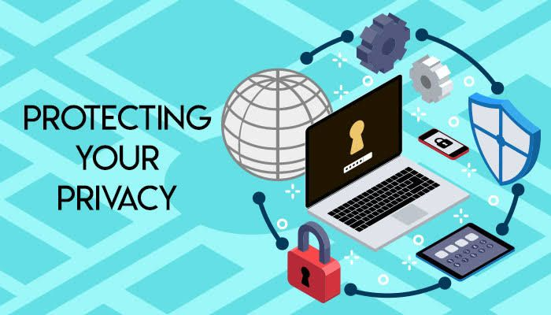
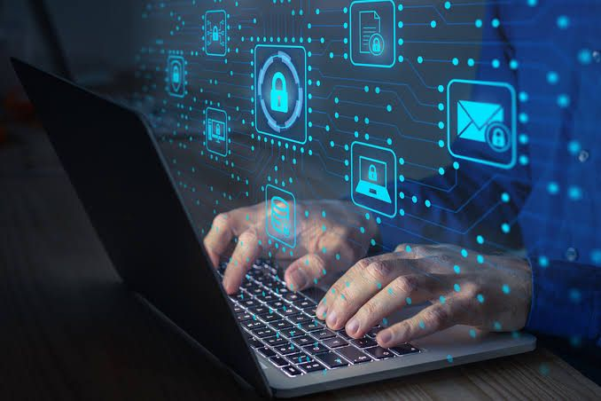

Introduction to Cyber Security
Cybersecurity is the process of defending computers, networks, systems, and data from digital attacks and unauthorized access. It helps protect digital assets from damage, theft, or misuse. On the other hand, digital privacy is the right to control how your personal information is collected, used, and shared online. In our hyper-connected world—where we use smartphones, online banking, social media, and cloud services—both cybersecurity and privacy are critical. They are not just technical issues; they are vital for our safety, freedom, and peace of mind in the digital era.
Common Threats
- The internet presents many risks, and understanding them helps us stay protected.
- Phishing Attacks involve tricking people into revealing private information by pretending to be a trusted entity.
- Malware, including viruses, trojans, and spyware, can steal data, damage files, or track activity without consent.
- Ransomware locks a user’s data and demands payment for its release, often causing major disruptions.
- Social Engineering uses human psychology to manipulate people into giving access or secrets.
- Weak Passwords like "123456" or "password" are easy to crack and allow hackers quick entry into accounts.
Best Practices
- Use strong, unique passwords for every account.
- Keep software and OS updated.
- Install antivirus and anti-malware tools.
- Use multi-factor authentication (MFA).
- Be cautious of unsolicited emails or links.
Real-World Cyber Incidents
Cyberattacks are not just theoretical—they have caused real-world damage. In 2019, Facebook experienced a massive data breach, exposing personal details of over 530 million users. In the U.S multiple hospitals were targeted by ransomware, forcing them to cancel surgeries and shut down patient services. In Pakistan, ATM skimming attacks in 2018 led to unauthorized transactions from thousands of bank accounts. These incidents demonstrate the consequences of weak security systems, including financial loss, reputational damage, and threats to public health and safety.
Privacy Challenges
There are several growing threats to privacy in today’s digital environment. Many mobile apps request access to sensitive features like your camera, microphone, or GPS—even when it’s not needed. On social media, users often overshare personal details such as location, vacation plans, or phone numbers, which can be exploited by scammers or stalkers. Furthermore, data brokers and advertisers collect massive amounts of behavioral data, often without proper user consent, to build profiles for targeted ads. A lack of awareness about privacy settings often leads to accidental data leaks or exposure.
How to Stay Safe Online
Online safety starts with smart habits. Always use strong, unique passwords for every account, and enable Two-Factor Authentication (2FA) for extra protection. Avoid clicking on unknown links in emails or texts, as they may lead to malicious websites or malware downloads. Install trusted antivirus software to detect and remove threats. Keep your software and apps regularly updated to fix security flaws. When accessing the internet in public places, avoid logging into sensitive accounts over unsecured public Wi-Fi.
Protecting Your Privacy
To maintain digital privacy, take proactive steps. Regularly check and review app permissions—deny access to your mic, camera, and location if not necessary. Avoid oversharing on social media, especially about your routines, family, or financial status. Use privacy-respecting browsers like Firefox or Brave, and consider using a VPN (Virtual Private Network) to hide your internet activity from trackers and hackers. Most importantly, always adjust your privacy settings on platforms like Facebook, Google, and Instagram to limit data exposure.
Conclusion
Cybersecurity and digital privacy are the foundations of a safe and secure online life. Whether you’re an individual using social media, a student doing online classes, or a company storing customer data, protection is essential. With cyber threats growing more sophisticated each day, we all have a role to play. By using smart practices like strong passwords, avoiding risky links, and securing your privacy settings, you can take control of your digital world. Stay informed, stay alert, and help build a safer internet for everyone.
Poject Members
This project was made by: Abu Zaid , Bisma Baig & Ayesha Gul.